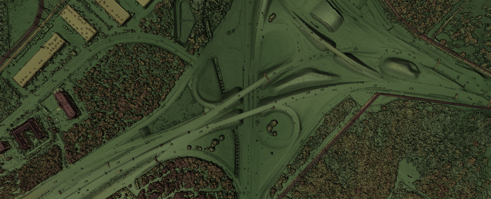
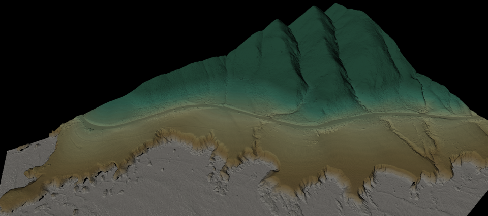
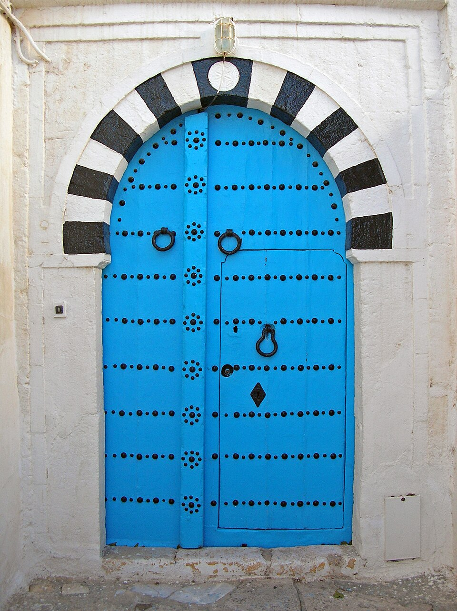
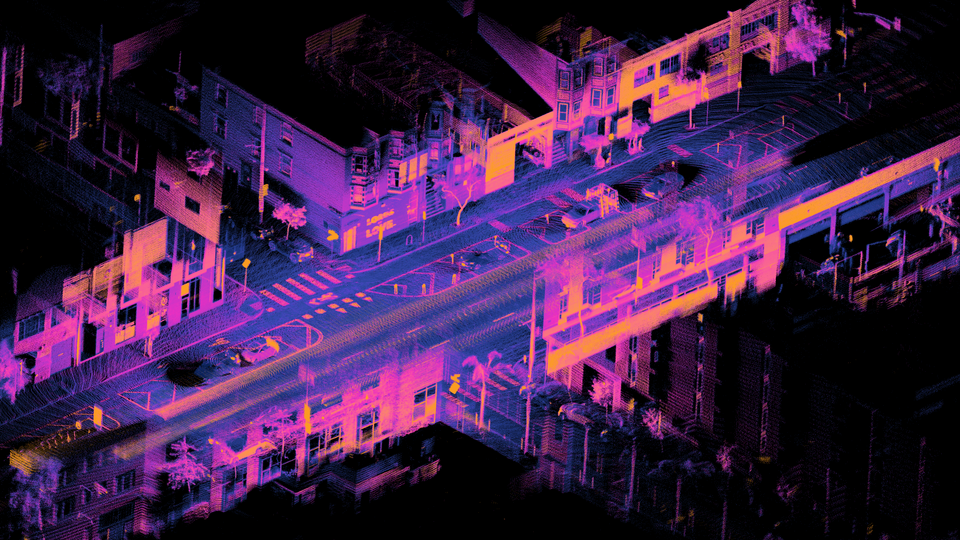
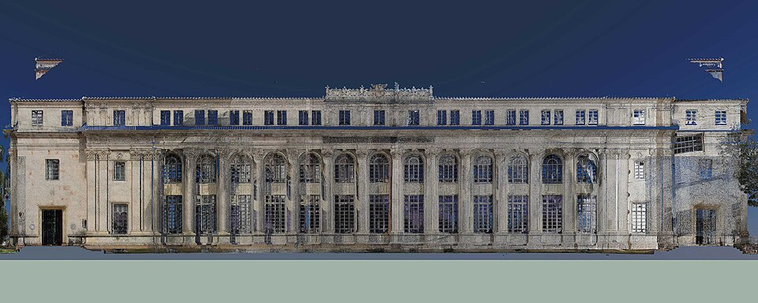

E, Nuage de points: references

Airborne LiDAR coloured by intensity in one hue: roads bright, trees textured. Borrowed: intensity-only colour for the ground.
LiDAR DEM coloured by height on black: green low, tan high, sea flat grey. Borrowed: height ramp, sea as flat grey points.
Sidi Bou Said door: saturated blue, black studs, black-and-white voussoirs. Borrowed: Sidi Bou Said blue #1C9AD6 for the member's points.
Spinning LiDAR: concentric rings around the sensor, magenta-orange intensity. Borrowed: scan rings expanding from the scanner position.
A façade scan that reads as a photo from afar and as dots up close. Borrowed: density rises until the dots read as surfaces.